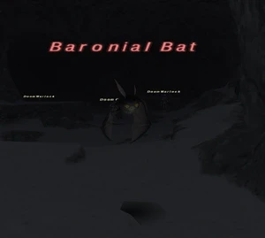

Level 75 reference · Zenith rules
|
Job: Notorious Monster |
 |

|
Zone |
Level |
Drops |
Steal |
Spawns |
Notes |
|
82 |
1 |
L, T(H) | |||
|
HP = Detects Low HP; M = Detects Magic; Sc = Follows by Scent; T(S) = True-sight; T(H) = True-hearing JA = Detects job abilities; WS = Detects weaponskills; Z(D) = Asleep in Daytime; Z(N) = Asleep at Nighttime | |||||

Notes:
- Spawned for the Quest: Cloak and Dagger
- Around 10,500HP
- Duo able by 2 75RDM/NIN or 75 NIN + 75 WHM
- Possibly Duo-able by 2 Bst/whm's using their 2hour's on VT Scorpions. Previous accounts of this being solo'd using only 1 pet with 2hour have been tested and proven false.
Video
See Video.
Adapted from Eden Wiki: Baronial Bat · Contributors and history · CC BY-SA 4.0. Revision 46990. Layout, links and optional background text adapted for Zenith.